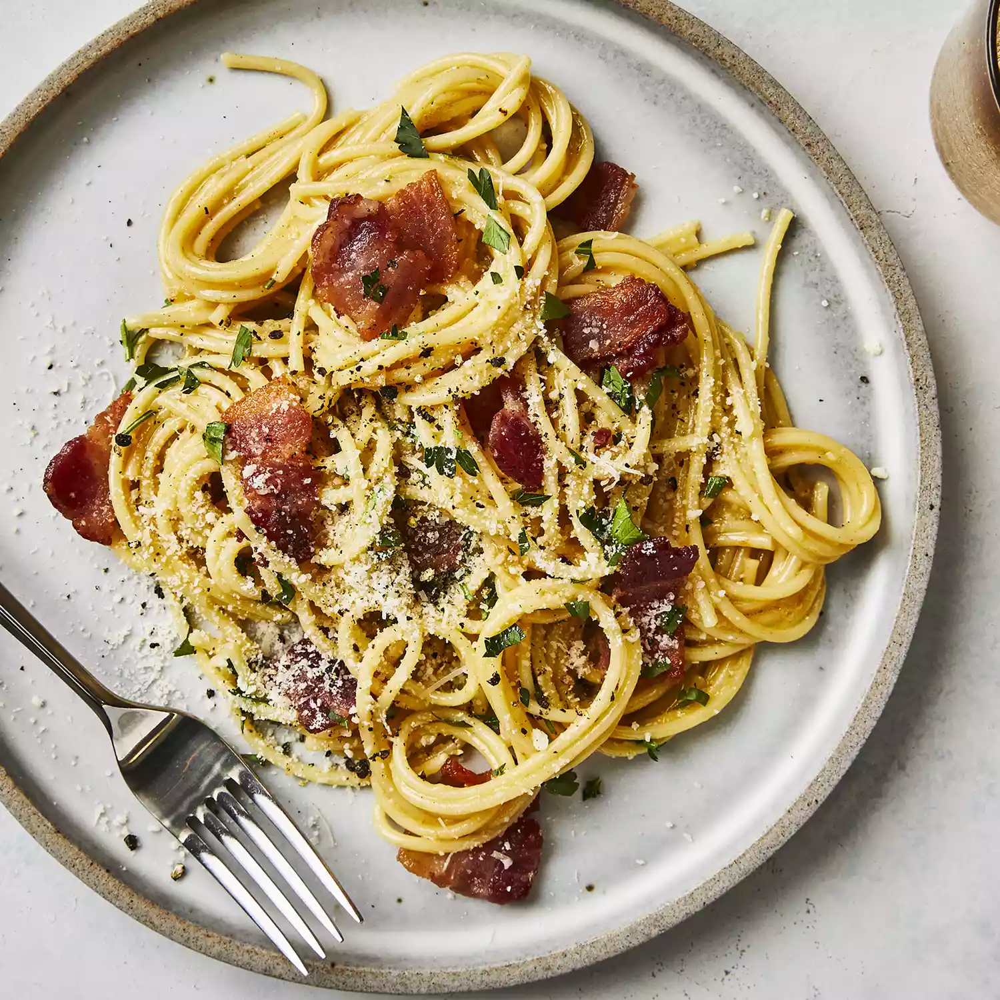

Pasta carbonara

Description :
Une recette de pates à la carbonara à la française, simple et rapide mais surtout délicieuse
Ingrédients
- 50 cl de crème fraîche
- 1 pincée de sel
- poivre
- 250g de lardons "selon préférence
- 1 oignon
- 500g de pates
- 3 jaunes d'oeuf
Etapes
- Cuire les pâtes dans un grand volume d'eau bouillante salée.
- Emincer les oignons et les faire revenir à la poêle. Dès qu'ils ont bien dorés, y ajouter les lardons.
- Préparer dans un saladier la crème fraîche, les oeufs, le sel, le poivre et mélanger.
- Retirer les lardons du feu dès qu'ils sont dorés et les ajouter à la crème.
- Une fois les pâtes cuite al dente, les égoutter et y incorporer la crème. Remettre sur le feu si le plat a refroidi.
- Servir et bon appétit ! Vous pouvez également agrémenter votre plat avec des champignons.